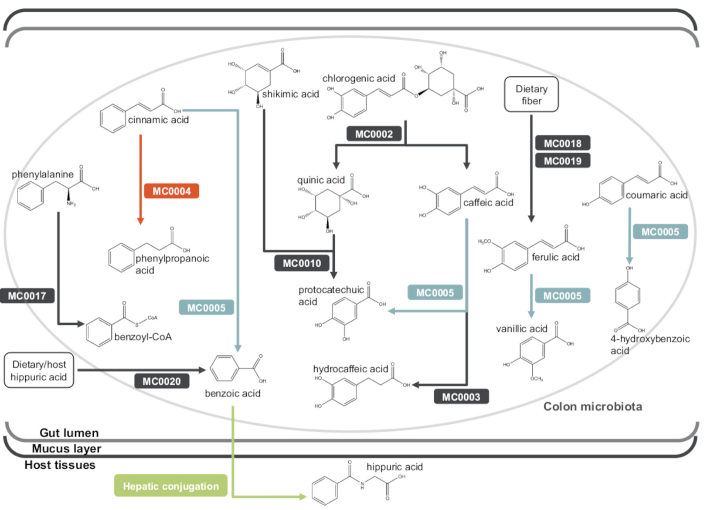

The human microbiome is a complex system whose complexity is compounded by the myriad interactions with the human immune system, gut metabolism, and other systems. Because the microbiome is an important aspect of human health and disease, it’s critical that we begin to understand the microbiome and its inherent complexities. Research groups are increasingly turning to systems biology approaches that incorporate complementary measurement platforms (e.g. metagenomics, metabolomics, etc) and integrative analytical approaches (e.g. network analyses). One such research group was that of Brial et al, who recently reported study results aimed at understanding the associations between the gut microbiome, the human host metabolism, diet, and health. This paper will be the focus of our discussion and the PDFcan be found here.
Brial et al took on the complexity of the microbiome using a large dataset of urine metabolomics data, stool metagenomics data, and diet data (food frequency questionnaire) of 271 non-diabetic Danish individuals (the MetaHIT study). The group began by surveying the urine metabolomics data for metabolites associated with microbiome health. It can be tough to know where to start on such an analytical path, so this group opted to use gut microbiome gene richness as a marker for metabolic health. The key assumption for this first analysis was that gene richness could be used as “a marker of ecological diversity mirroring improvements in metabolic health”. Of course we could spend a lot of time discussing the nuance and relevance associated with this type of assumption, but we can agree it’s a fair way to start their exploration.
Their analysis highlighted hippurate as being the human (urine) metabolite most positively associated with gut microbiome gene richness. Hippurate has been associated with gut microbiome diversity and health previously (example here), so this study provides further evidence to that line of research. Follow up analyses found that hippurate was also associated with dietary and clinical factors such as insulin resistance.
After the group had identified hippurate as their metabolite of interest, they dug into the bacterial metagenomics to identify microbial metabolic processes associated with increased hippurate production. The research group broke the metagenomics data down into manually curated metabolic modules based on KEGG annotations. Their abundance analyses found that two metabolic modules were correlated with urine hippurate (see their pathway context in the figure below). Both of these modules are associated with benzoic acid, which in turn is associated with hippuric acid, although the pathway context highlights the complications and nuances associated with interpretations of these findings.

Manuscript diagram of of hippurate metabolic pathways in the context of other related bacterial pathways.)
Perhaps the most commendable aspect of this manuscript is the follow up of the human findings in mice (as the field progresses, linking human data to models will be critical for gaining relevant mechanistic insights into the biological processes). Brial et al used their analytical results to design a mouse experiment in which mice of lean and high-fat diets were administered hippurate and then tested for their glucose tolerance. As was hypothesized from the human data analyses, the mice fed a high fat diet demonstrated reduced plasma glucose levels when treated with hippurate compared to the saline control. The opposite trend was observed when the mice were treated with a standard “control chow” diet. Insulin response rates were also differentially impacted by hippurate between the diet treatment groups. It’s encouraging to see the results from the human analyses being explored and partially validated in models, although additional experimentation will be required in this complex system.
As far as next steps go, the most obvious is probably additional mouse experiments. Because diet is seems important to this observed phenomenon, it might be worth comparing normal diet mice to mice with high levels of benzoate and benzoic acid (benzoate is the conjugate base of benzoic acid, and benzoic acid is a metabolic precursor to hippuric acid as well as a food preservative, among other things). The impact of hippurate could be due to antimicrobial properties, so further experiments will likely be conducted to parse this out as well.
This study also highlights the importance of collecting additional “omics” layers in these types of studies. The current human study is limited to urine metabolomics and stool metagenomics, however similar future studies could benefit from stool metabolomics, RNA-seq, or stool transcriptomics. Approaches such as stool transcriptomics could be especially beneficial when investigating bacterial pathways because metagenomics abundance profiles would be largely expected to lack correlation to expression. It will incredibly interesting and exciting to see how those suture studies leverage deeper profiling of the microbiome and its host.
Ultimately this paper was an interesting albeit fairly complex read, which probably expected given the incredibly complex nature of their systems biology approach. It’s still worth going through. It will be worth watching this field in general as well, as it promises to yield many more interesting findings as the experimental programs mature and data grows.